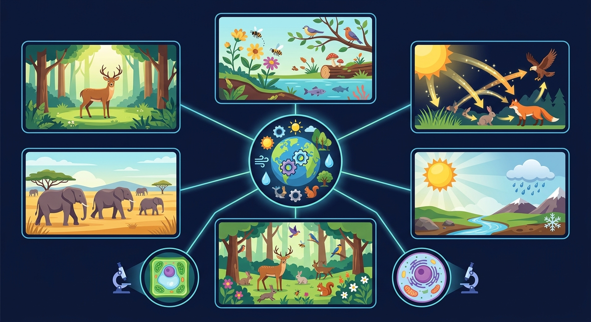

🎯 能说出生态系统四大组成成分及其作用
🎯 能判断给定情境中生物所属营养级
🎯 能分析人工生态瓶稳定性影响因素
生产者、消费者、分解者——生态系统中的三大阵营与食物链
关键：生态系统 = 生物部分(生产者+消费者+分解者) + 非生物部分(阳光、水、空气等)
❓ 为什么说‘螳螂捕蝉，黄雀在后’是食物链但不是完整生态系统？
❓ 生态瓶里放越多生物就越稳定吗？
❓ 分解者为什么不算消费者？
学完这一课，这些问题你都能自信地回答。
下列食物链的书写方式，正确的是？
点击生物图标，按照"谁被谁吃"的顺序依次点击，构建正确的食物链。从生产者（绿色）开始！
生态系统中，能量流动的起点是？
在食物链"草→蚱蜢→青蛙→蛇→鹰"中，如果蛇被大量捕杀，短期内青蛙数量会？
有人认为"把害虫全部消灭，庄稼就能大丰收"。这种做法合理吗？
设计包含水草、小鱼、泥沙的封闭生态瓶，观察记录变化
用‘生物+环境+关系’三要素拆解任意生态系统
生产者像厨师，消费者像食客，分解者像清洁工
对比自然生态系统与人工生态瓶的能量流动差异
观察生态瓶内藻类与水生生物的数量变化关系
设计校园生态角时如何避免物种过度竞争
先独立作答，再点选项查看对错与错因。
下列哪项属于池塘生态系统的非生物成分？
若池塘中螺蛳全部消失，最可能直接影响：
垂柳在池塘生态系统中主要扮演的角色是：
腐烂的柳叶被____分解后，释放的矿物质可被藻类重新利用。
答案：分解者
微生物将有机物分解为无机物
白鹭与小鱼之间的关系属于____关系。
答案：捕食
消费者之间的营养关系
✅ 硝化细菌是生产者，寄生菌是消费者
💡 混淆营养方式（自养/异养）与生态角色
✅ 所有食物链都始于生产者（植物/藻类）
💡 忽视能量根本来源是太阳能
口诀：生环两分不可少，食链能量逐级跑
类比：生态系统像餐厅：食材（非生物）、厨师（生产者）、顾客（消费者）、洗碗工（分解者）
💡 种群与环境相互作用。
外链：https://phet.colorado.edu/sims/html/natural-selection/latest/natural-selection_zh_CN.html
开放任务：用三步写出你如何向同学讲清「生态系统的组成」。